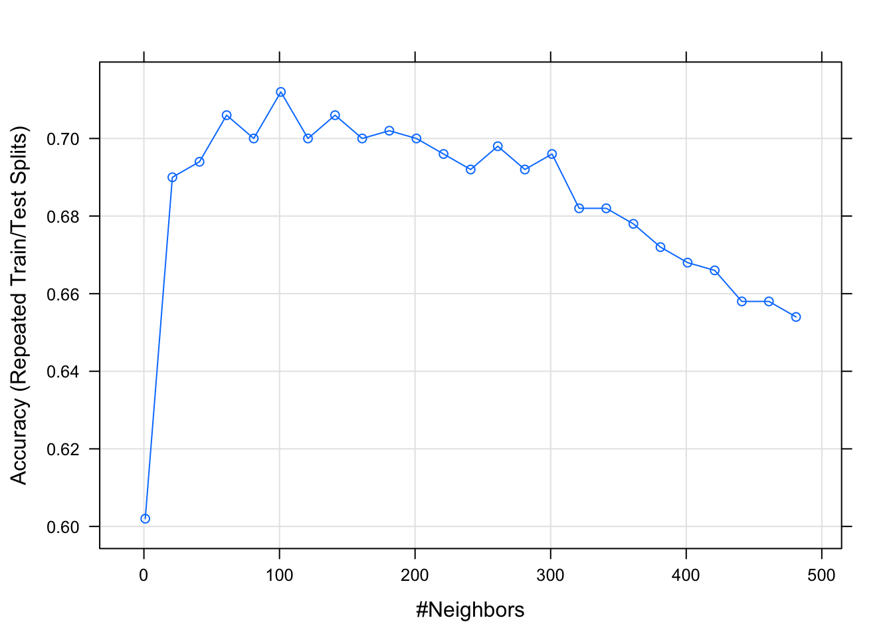
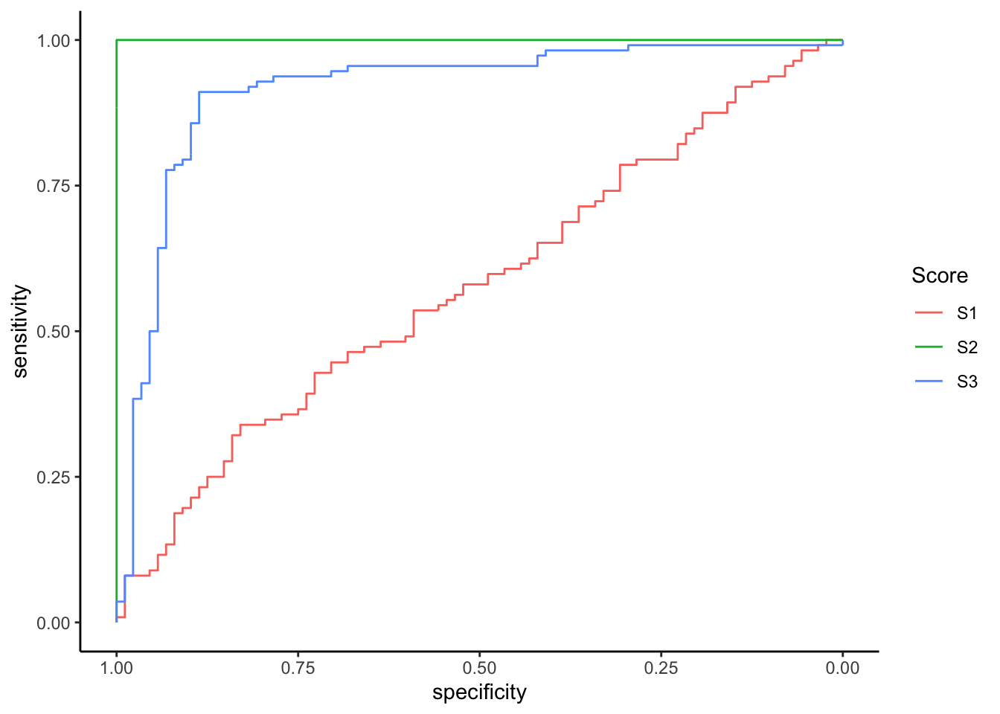
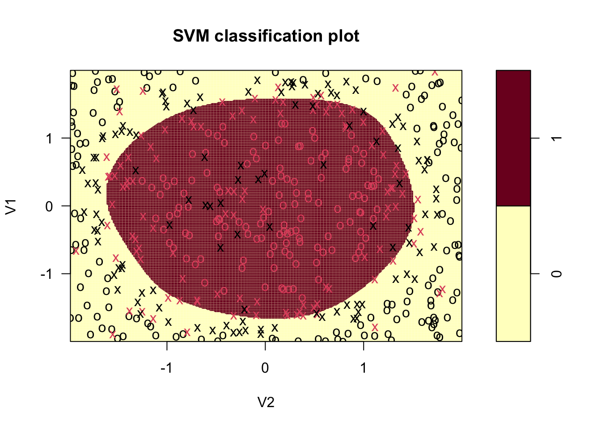

Chapitre 2 Support Vector Machine (SVM)
Etant donnée un échantillon \((x_1,y_1),\dots,(x_n,y_n)\) où les \(x_i\) sont à valeurs dans \(\mathbb R^p\) et les \(y_i\) sont binaires à valeurs dans \(\{-1,1\}\), l’approche SVM cherche le meilleur hyperplan en terme de séparation des données. Globalement on veut que les 1 se trouvent d’un coté de l’hyperplan et les -1 de l’autre. Dans cette partie on propose d’étudier la mise en œuvre de cet algorithme tout d’abord dans le cas idéal où les données sont séparables puis dans le cas plus réel où elles ne le sont pas. Nous verrons ensuite comment introduire de la non linéarité ne utilisant l’astuce du noyau.
2.1 Cas séparable
Le cas séparable est le cas facile : il correspond à la situation où il existe effectivement un (même plusieurs) hyperplan(s) qui sépare(nt) parfaitement les 1 des -1. Il ne se produit quasiment jamais en pratique mais il convient de l’étudier pour comprendre comment est construit l’algorithme. Dans ce cas on cherche l’hyperplan d’équation \(\langle w,x\rangle+b=w^tx+b=0\) tel que la marge (qui peut être vue comme la distance entre les observations les plus proches de l’hyperplan et l’hyperplan) soit maximale. Mathématiquement le problème se réécrit comme un problème d’optimisation sous contraintes :
\[\begin{equation} \min_{w,b}\frac{1}{2}\|w\|^2 \tag{2.1} \end{equation}\] \[\text{sous les contraintes } y_i(w^tx_i+b)\geq 1,\ i=1,\dots,n.\]
La solution s’obtient de façon classique en résolvant le problème dual et elle s’écrit comme une combinaison linéaire des \(x_i\) \[w^\star=\sum_{i=1}^n\alpha_i^\star y_ix_i.\] De plus, les conditions KKT impliquent que pour tout \(i=1,\dots,n\):
- \(\alpha_i^\star=0\)
ou
- \(y_i(x_i^tw+b)-1=0.\)
Ces conditions impliquent que \(w^\star\) s’écrit comme une combinaison linéaire de quelques points, appelés vecteurs supports qui se trouvent sur la marge. Nous proposons maintenant de retrouver ces points et de tracer la marge sur un exemple simple.
On considère le nuage de points suivant :
n <- 20
set.seed(123)
X1 <- scale(runif(n))
set.seed(567)
X2 <- scale(runif(n))
Y <- rep(-1,n)
Y[X1>X2] <- 1
Y <- as.factor(Y)
donnees <- data.frame(X1=X1,X2=X2,Y=Y)
p <- ggplot(donnees)+aes(x=X2,y=X1,color=Y)+geom_point()
p
La fonction svm du package e1071 permet d’ajuster une SVM :
Récupérer les vecteurs supports et visualiser les sur le graphe (en utilisant une autre couleur par exemple). On les affectera à un data.frame dont les 2 premières colonnes représenteront les valeurs de \(X_1\) et \(X_2\) des vecteurs supports.
Retrouver ce graphe à l’aide de la fonction plot.
Rappeler la règle de décision associée à la méthode SVM. Donner les estimations des paramètres de la règle de décision sur cet exemple. On pourra notamment regarder la sortie
coefde la fonction svm.On dispose d’un nouvel individu \(x=(-0.5,0.5)\). Expliquer comment on peut prédire son groupe.
Retrouver les résultats de la question précédente à l’aide de la fonction predict. On pourra utiliser l’option
decision.values = TRUE.Obtenir les probabilités prédites à l’aide de la fonction predict. On pourra utiliser
probability=TRUEdans la fonction svm.
2.2 Cas non séparable
Dans la vraie vie, les groupes ne sont généralement pas séparables et il n’existe donc pas de solution au problème (2.1). On va donc autoriser certains points à être :
- mal classés
et/ou
- bien classés mais à l’intérieur de la marge.
Mathématiquement, cela revient à introduire des variables ressorts (slacks variables) \(\xi_1,\dots,\xi_n\) positives telles que :
- \(\xi_i\in [0,1]\Longrightarrow\) \(i\) bien classé mais dans la région définie par la marge ;
- \(\xi_i>1 \Longrightarrow\) \(i\) mal classé.
Le problème d’optimisation est alors de minimiser en \((w,b,\xi)\) \[\frac{1}{2}\|w\|^2 +C\sum_{i=1}^n\xi_i\] \[\textrm{sous les contraintes } \left\{ \begin{array}{l} y_i(w^tx_i+b)\geq 1 -\xi_i \\ \xi_i\geq 0, i=1,\dots,n. \end{array}\right.\] Le paramètre \(C>0\) est à calibrer et on remarque que le cas séparable correspond à \(C\to +\infty\). Les solutions de ce nouveau problème d’optimisation s’obtiennent de la même façon que dans le cas séparable, en particulier \(w^\star\) s’écrite toujours comme une combinaison linéaire \[w^\star=\sum_{i=1}^n\alpha_i^\star y_ix_i.\] de vecteurs supports sauf qu’on distingue deux types de vecteurs supports (\(\alpha_i^\star>0\)):
- ceux sur la frontière définie par la marge : \(\xi_i^\star=0\) ;
- ceux en dehors : \(\xi_i^\star>0\) et \(\alpha_i^\star=C\).
Le choix de \(C\) est crucial : ce paramètre régule le compromis biais/variance de la svm :
- \(C\searrow\): la marge est privilégiée et les \(\xi_i\nearrow\) \(\Longrightarrow\) beaucoup d’observations dans la marge ou mal classées (et donc beaucoup de vecteurs supports).
- \(C\nearrow\Longrightarrow\) \(\xi_i\searrow\) donc moins d’observations mal classées \(\Longrightarrow\) meilleur ajustement mais petite marge \(\Longrightarrow\) risque de surajustement.
On choisit généralement ce paramètre à l’aide des techiques présentées dans le chapitre 1 :
- choix d’une grille de valeurs de \(C\) et d’un critère ;
- choix d’une méthode de ré-échantillonnage pour estimer le critère ;
- choix de la valeur de \(C\) qui minimise le critère estimé.
On considère le jeu de données df3 définie ci-dessous.
n <- 1000
set.seed(1234)
df <- as.data.frame(matrix(runif(2*n),ncol=2))
df1 <- df %>% filter(V1<=V2)%>% mutate(Y=rbinom(nrow(.),1,0.95))
df2 <- df %>% filter(V1>V2)%>% mutate(Y=rbinom(nrow(.),1,0.05))
df3 <- bind_rows(df1,df2) %>% mutate(Y=as.factor(Y))
ggplot(df3)+aes(x=V2,y=V1,color=Y)+geom_point()+
scale_color_manual(values=c("#FFFFC8", "#7D0025"))+
theme(panel.background = element_rect(fill = "#BFD5E3", colour = "#6D9EC1",size = 2, linetype = "solid"),
panel.grid.major = element_blank(),
panel.grid.minor = element_blank())
Ajuster 3 svm en considérant comme valeur de \(C\) : 0.000001, 0.1 et 5. On pourra utiliser l’option
cost.Calculer les nombres de vecteurs supports pour chaque valeur de \(C\).
Visualiser les 3 svm obtenues. Interpréter.
2.3 L’astuce du noyau
Les SVM présentées précédemment font l’hypothèse que les groupes sont linéairement séparables, ce qui n’est bien entendu pas toujours le cas en pratique. L’astuce du noyau permet de mettre de la non linéarité, elle consiste à :
- plonger les données dans un nouvel espace appelé espace de représentation ou feature space ;
- appliquer une svm linéaire dans ce nouvel espace.
Le terme astuce vient du fait que ce procédé ne nécessite pas de connaître explicitement ce nouvel espace : pour résoudre le problème d’optimisation dans le feature space on a juste besoin de connaître le noyau associé au feature space. D’un point de vu formel un noyau est une fonction \[K:\mathcal X\times\mathcal X\to\mathbb R\] dont les propriétés sont proches d’un produit scalaire. Il existe donc tout un tas de noyau avec lesquels on peut faire des SVM, par exemple
- Linéaire (sur \(\mathbb R^d\)) : \(K(x,x')=x^tx'\).
- Polynomial (sur \(\mathbb R^d\)) : \(K(x,x')=(x^tx'+1)^d\).
- Gaussien (Gaussian radial basis function ou RBF) (sur \(\mathbb R^d\)) \[K(x,x')=\exp\left(-\frac{\|x-x'\|}{2\sigma^2}\right).\]
- Laplace (sur \(\mathbb R\)) : \(K(x,x')=\exp(-\gamma|x-x'|)\).
- Noyau min (sur \(\mathbb R^+\)) : \(K(x,x')=\min(x,x')\).
- …
Bien entendu, en pratique tout le problème va consister à trouver le bon noyau !
On considère le jeu de données suivant où le problème est d’expliquer \(Y\) par \(V1\) et \(V2\).
n <- 500
set.seed(13)
X <- matrix(runif(n*2,-2,2),ncol=2) %>% as.data.frame()
Y <- rep(0,n)
cond <- (X$V1^2+X$V2^2)<=2.8
Y[cond] <- rbinom(sum(cond),1,0.9)
Y[!cond] <- rbinom(sum(!cond),1,0.1)
df <- X %>% mutate(Y=as.factor(Y))
ggplot(df)+aes(x=V2,y=V1,color=Y)+geom_point()+theme_classic()
Ajuster une svm linéaire et visualiser l’hyperplan séparateur. Que remarquez-vous ?
Exécuter la commande suivante et commenter la sortie.

Faire varier les paramètres gamma et cost. Interpréter (on pourra notamment étudier l’évolution du nombre de vecteurs supports en fonction du paramètre cost).
mod.svm2 <- svm(Y~.,data=df,kernel="radial",gamma=...,cost=...) mod.svm3 <- svm(Y~.,data=df,kernel="radial",gamma=...,cost=...) mod.svm4 <- svm(Y~.,data=df,kernel="radial",gamma=...,cost=...) plot(mod.svm2,df,grid=250) plot(mod.svm3,df,grid=250) plot(mod.svm4,df,grid=250) mod.svm2$nSV mod.svm3$nSV mod.svm4$nSVSélectionner automatiquement ces paramètres. On pourra utiliser la fonction tune en faisant varier C dans c(0.1,1,10,100,1000) et gamma dans c(0.5,1,2,3,4).
Faire de même avec caret, on utilisera method=“svmRadial” et prob.model=TRUE.
Visualiser la règle sélectionnée.
2.4 Exercices
On considère \(n\) observations \((x_1,y_1),\dots,(x_n,y_n)\) telles que \((x_i,y_i)\in\mathbb R^p\times\{-1,1\}\). On cherche à expliquer la variable \(Y\) par \(X\). On considère l’algorithme SVM et on se place dans le cas où les données sont séparables.
Soit \(\mathcal H\) un hyperplan séparateur d’équation \(\langle w,x\rangle+b=0\) où \(w\in\mathbb R^p,b\in\mathbb R\). Exprimer la distance entre \(x_i,i=1,\dots,n\) et \(\mathcal H\) en fonction de \(w\) et \(b\).
Expliquer la logique du problème d’optimisation \[\max_{w,b,\|w\|=1}M\] \[\textrm{sous les contraintes } y_i(\langle w,x_i\rangle+b)\geq M,\ i=1,\dots,n.\]
Montrer que ce problème peut se réécrire \[\min_{w,b}\frac{1}{2}\|w\|^2\] \[\textrm{sous les contraintes } y_i(\langle w,x_i\rangle+b)\geq 1,\ i=1,\dots,n.\]
On rappelle que pour la minimisation d’une fonction \(h:\mathbb R^p\to\mathbb R\) sous contraintes affines \(g_i(u)\geq 0,i=1,\dots,n\), le Lagrangien s’écrit \[L(u,\alpha)=h(u)-\sum_{i=1}^n\alpha_ig_i(u).\] Si on désigne par \(u_\alpha=\mathop{\mathrm{argmin}}_uL(u,\alpha)\), la fonction duale est alors donnée par \[\theta(\alpha)=L(u_\alpha,\alpha)=\min_{u\in\mathbb R^p}L(u,\alpha),\] et le problème dual consiste à maximiser \(\theta(\alpha)\) sous les contraintes \(\alpha_i\geq 0\). En désignant par \(\alpha^\star\) la solution de ce problème, on déduit la solution du problème primal \(u^\star=u_{\alpha^\star}\). Les conditions de Karush-Kuhn-Tucker sont données par
- \(\alpha_i^\star\geq 0\).
- \(g_i(u_{\alpha^\star})\geq 0\).
- \(\alpha_i^\star g_i(u_{\alpha^\star})=0\).
Écrire le Lagrangien du problème considéré et en déduire une expression de \(w\) en fonction des \(\alpha_i\) et des observations.
Écrire la fonction duale.
Écrire les conditions KKT et en déduire les solutions \(w^\star\) et \(b^\star\).
Interpréter les conditions KKT.
On considère \(n\) observations \((x_1,y_1),\dots,(x_n,y_n)\) telles que \((x_i,y_i)\in\mathbb R^3\times\{-1,1\}\). On cherche à expliquer la variable \(Y\) par \(X=(X_1,X_2,X_3)\). On considère l’algorithme SVM et on se place dans le cas où les données sont séparables. On rappelle que cet algorithme consiste à chercher une droite d’équation \(w^tx+b=0\) où \((w,b)\in\mathbb R^3\times\mathbb R\) sont solutions du problème d’optimisation (problème primal) \[\min_{w,b}\frac{1}{2}\|w\|^2\] \[\textrm{sous les contraintes } y_i(w^tx_i+b)\geq 1,\ i=1,\dots,n.\] On désigne par \(\alpha_i^\star,i=1,\dots,n\), les solutions du problème dual et par \((w^\star,b^\star)\) les solutions du problème ci-dessus.
Donner la formule permettant de calculer \(w^\star\) en fonction des \(\alpha_i^\star\).
Expliquer comment on classe un nouveau point \(x\in\mathbb R^3\) par la méthode svm.
Les données se trouvent dans un dataframe
df. On exécuteset.seed(1234) n <- 100 X <- data.frame(X1=runif(n),X2=runif(n),X3=runif(n)) X <- data.frame(X1=scale(runif(n)),X2=scale(runif(n)),X3=scale(runif(n))) Y <- rep(-1,100) Y[X[,1]<X[,2]] <- 1 #Y <- (apply(X,1,sum)<=0) %>% as.numeric() %>% as.factor() df <- data.frame(X,Y=as.factor(Y))et on obtient
df[mod.svm$index,] X1 X2 X3 Y 51 -1.1 -1.0 -1.0 1 92 0.7 0.8 1.1 1 31 0.7 0.5 -1.0 -1 37 -0.5 -0.6 0.3 -1 mod.svm$coefs [,1] [1,] 59 [2,] 49 [3,] -30 [4,] -79 mod.svm$rho [1] -0.5Calculer les valeurs de \(w^\star\) et \(b^\star\). En déduire la règle de classification.
On dispose d’une nouvelle observation \(x=(1,-0.5,-1)\). Dans quel groupe (
-1ou1) l’algorithme affecte cette nouvelle donnée ?